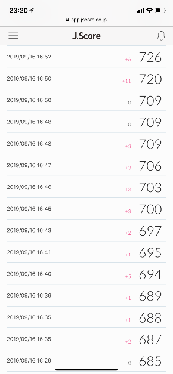
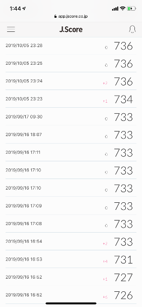
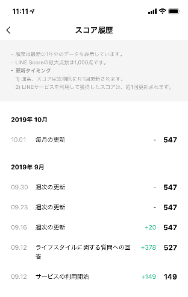

近年、日本においても通信業やインターネット関連事業を主業とする事業者による貸金業への参入が相次いでいます。こういった事業者の特徴としては、自社で保有する膨大なデータやユーザーの属性情報よりスコアリングを行い、それを与信審査に活用したり、スマートフォン一つで24時間365日、申込から借入・返済まで対応しているといった点があります。
2017年9月には、ソフトバンクがみずほ銀行と組んで、AIを活用した個人向けローンサービス「J.Score」を開始。今年に入ってからは、KDDI、LINEもそれぞれ「au WALLET スマートローン」、「LINE Pocket Money」のサービス名称で個人向け融資を展開しています。
3社ともスマートフォン一つで手続きが完結できるのが大きな特徴です。更に「J.Score」と「LINE Pocket Money」は、個人の信用度を測る「信用スコアリング」を用いたサービスも提供しています。
今回は、個人信用スコアやスマホ完結型ローンなどの動きについて、「J.Score」と「LINE Pocket Money」に関する筆者自身の体験を元に紹介します。
自分の信用度がスコアでわかる
近年の個人向けローンサービスにおけるキーワードとしては、何と言っても「信用スコアリング」が挙げられます。「信用スコアリング」とは、学歴や携帯回線の契約履歴、クレジットカードの支払い履歴などのデータを活用し、個人の信用力をAIが自動分析し数値化するもので、アメリカでは「FICOスコア」、中国では「芝麻信用」が有名です。信用スコアリングは、「それを用いてサービスを提供することで、より多くのデータを収集することができ、その結果を更に別サービスに展開することができる」といった構造となっており、個人のニーズに沿った融資や各種優待サービスを提供する糸口に繋がります。
日本においては、「J.Score」が、国内で初めてAIにより利用者の信用度を自動で数値化するサービス「AIスコア」を開発。またLINEグループも、コミュニケーションアプリである「LINE」の利用状況等を基にスコアリングを行うサービス「LINE Score」を展開しており、どちらもその結果を融資における与信審査に活用しています。
筆者も両社の提供するスコアリングサービスを試してみましたが、それぞれスコアの算出に使用する情報が異なる点に関心を抱きました。
「J.Score」を試してみた
まずJ.Scoreにおける「AIスコア」ですが、こちらはAIによる利用者の将来年収の予測等を行うため、より多くの質問に回答することでスコアが上がる仕組みとなっています。利用者はまず、サービス利用開始時に初期登録として「生年月日」や「最終学歴」、「勤務形態」、「年収」など18のベースとなる質問に回答することで、上限1000点の範囲内で一次スコアリングがされます。そして初期登録後に、「生活」、「性格」、「ファイナンス」、「ウォレット」、「プロフィール」の5つのジャンルに分かれた追加質問（質問数は合計で160問超）に答えることで点数を上げることができる形となっています。また、「みずほ銀行の口座情報」・「ソフトバンクの回線情報」など指定された他サービスとの情報連携を行うこともスコアアップに繋がります。これは、情報連携を行うことにより分析精度を上げることが可能になるためであり、例えば回線情報連携では、「毎月どの程度携帯電話を利用しているのか」、「毎月料金をきちんと支払っているか」といった情報がJ.Scoreに連携されることとなります。J.Score側としてはより多くの情報を集めたいといった思いがあり、そのため各サービスとの連携を行うことで、それぞれ「レンディング利用時の金利を年率0.1％下げる」といったメリットを利用者側に提供しています。なお情報連携の登録自体は、同意事項に同意し、「氏名」や「生年月日」などの必要事項を記入するだけで簡単に行うことができます。
筆者の場合、初期登録を終えた段階で685点。その後追加の質問に答えることで、徐々に点数が上がっていきます（写真1）。

写真１：筆者の「AIスコア」は初期登録時点で685点。（筆者撮影）
追加の質問に答えていくと733点までスコアが上がりました。
なお質問の回答は後から何度でもやり直すことが可能で、試しに後日回答し直した結果、即時にスコアも書き換えられ733点から736点に変更になりました（写真2）。何度も回答を変更した結果、後日点数が10点ほど下がりました。AIにより質問回答の違和感や虚偽回答がないか等の不正を検知しているものと思われます。

写真２：追加の質問に答えていくと733点までスコアが上がった。質問を回答しなおすと、即時にスコアが736点になった。（筆者撮影）
なお「AIスコア」を算出するためのアルゴリズムの詳細は明かされていませんが、J.Scoreによると、「アルゴリズムの特徴は利用者の将来年収を推定できる点にあり、将来性までを加味して信用力を判断できるため、現状では収入の低い若手社会人などにも融資が可能となる」とされています。
「LINE Score」も試してみた
続いて「LINE Score」です。こちらはLINEのアプリ上で「スコア診断」のボタンをタップして規約に同意すると、これまでのLINE関連サービスの利用状況に基づいた一次スコアリングがされます。その後、「生年月日」や「家族構成」、「勤務形態」、「年収」などライフスタイルに関する15の質問に回答することで最大1000点まででスコアアップをさせることができる他、「LINE家計簿の登録で20点追加」、「本人確認の実施で20点追加」といった項目が用意されています。
筆者がスコア診断をした結果は、サービス利用開始の時点で149点。最低は100点なのですが、LINE Payを使用していることより多少スコアが付いたものと思われます。
その後、ライフサイクルに関する追加質問に回答した結果、527点までスコアアップし、本人確認を実施したことにより更に20点追加され547点となりました（写真3）。

写真３：筆者の「LINE Score」は、サービス利用開始の時点で149点。その後527点までスコアアップし、本人確認を実施したことにより更に20点追加され547点となった。（筆者撮影）
２つの信用スコア
筆者のスコアリング結果を見てみますと、「J.Score（AIスコア）」は1000点満点中736点、「LINE Score」は1000点満点中547点と、点数の置き方は各社で乖離が見られました。しかし一方で、「J.Score」は融資の申込みができるボーダーラインを600点以上、「LINE Pocket Money」は301点以上としていることから、筆者の想定ではありますが、利用者の信用レベルは両社である程度一致してくるものと思われます。
なお、各事業者においては、当然スコアリング結果だけで審査をしている訳ではなく、例えば「外部信用情報」と言われる利用者毎のローンやクレジットの利用歴・利用状況等についても審査の材料としています。そのためスコアリングの結果を基に「仮提示された条件」と「本審査後に実際に契約できる条件」とが異なってきたり、場合によっては仮提案の段階では良い条件であっても本審査の結果、借りることができないといった事態もあり得るのです（筆者のケースでは、「LINE Pocket Money」の利用において、スコアリング後の仮条件の段階では「年率6.0％」で提示されましたが、本審査後の契約の段階では「年率4.0％」まで金利が下がりました）。
自分の信用スコアを意識する時代？
この様に日本にも信用スコアリングを活用したビジネスモデルが徐々に浸透し始めてきています。一方で利用者側の意見として、「個人情報を提供することに抵抗を感じる」、「低いスコアになると生活がし難くなる不安がある」など、信用スコアリングに対する否定的な声も上がっています。各事業者においては、こういった利用者の意見に耳を傾け、不安感を払拭し、いかに利便性が高いサービスを提供できるかが今後の課題となってくるのではないでしょうか。
本人確認もスマホ完結
近年のローンサービスのもう一つの傾向として、「24時間365日対応しており、スマートフォン一つで申込みから借入・返済まで完結することができるサービスが増えてきている」といった点が挙げられます。
特に、これまでのサービスにおいては、オンラインによる非対面での取引の場合、本人確認の際に運転免許証やパスポートなどの「本人確認書類」の写しを郵送する必要があり、利用者にとって利用開始までの大きな障害となっていました。それが近年では、スマートフォンアプリのカメラ機能を活用して、本人が顔写真付き証明書と一緒に映った動画を撮影、それをアップロードすることで照合を行う方法（この様な本人確認を「e-KYC」と呼びます）にて、オンライン上で本人確認を完了させることが可能となりました。
参考情報：
- 「犯罪収益移転防止法施行規則の改正について ～オンラインで完結する本人確認方法の導入～」、警察庁、平成30年11月12日
LINEでは、「スマホでかんたん本人確認」と称して、このオンラインでの本人確認方法を取り入れており、利用者は、「本人情報の入力と身分証の撮影」、「ガイドに従ってのアクション（左右を向くなど）」、「自身の顔と身分証を同時に撮影」、「身分証を動かして、身分証の側面や厚みを映す」といった4つのステップを踏み、その動画を送るだけで、簡単に本人確認を済ますことができるようになっています。
なおオンラインでの本人確認の方法として、上記の他に、既に開設済の銀行口座の情報と連携させ、事業者が金融機関に確認する形で本人確認を実施する方法もあり、LINEでは、この方法での本人確認にも対応しています（この他に、郵送による本人確認にも対応しています）。
いずれにせよオンラインで本人確認ができるようになったことにより、スマートフォン一つでローンに関わる全ての手続きが完結させられることとなり、事業者側・サービス利用者側の双方にとって格段に手間が省けることとなったと言えるでしょう。
また、「LINE Pocket Money」では、借入金が携帯アプリ上のデジタルウォレットにチャージされるため、チャージされた残高をそのままスマートフォンを使ったQRコード決済で利用する導線となっています。この様に、ただ単にお金を貸すのではなく、その後の利用者の行動についても考慮した作りとなっている点は非常に興味深く感じました。
個人ローンと賢く付き合う
日本においては、住宅ローンや自動車ローンなど明確な目的のあるローンを除いて「借金をすること」に対して、ネガティブな印象を抱く人が多いかと思います。これは、幼少期より「貯蓄することが美徳」という教育を受けてきたこともあり、「借金をする＝お金にだらしない」といった感覚を抱いたり、闇金により借金まみれになる恐怖のイメージなどの影響もあるのではないでしょうか。
そういったイメージを払拭すべく、近年ローン事業に新規参入した事業者においては、「前向きな資金としてのローン活用」や「お手軽にちょっとだけ借りるといったポップ感」などを打ち出しています。
例えば、「J.Score」では「未来への投資」といったキャッチフレーズを掲げ、資格取得のための教育資金への利用を推奨したり、「LINE Pocket Money」では、必要な時に1円からちょっとだけ借りれるお手軽さを売りにしたりすることで、これまでローンを利用してこなかった層の取込を図ろうとしているように見えます。こういった観点で言えば、「信用スコアリング」も日本においては新たな取り組みであり、流行に敏感な層や、新しい物事に関心を抱く層への訴求を図っているのではないでしょうか。
今回は近年の動向から個人向けローンサービスについて紹介しました。今後も業界全体がどのような動きを見せていくのか、注目して参りたいと思います。


{kind=link}
{kind=link}
{kind=link}